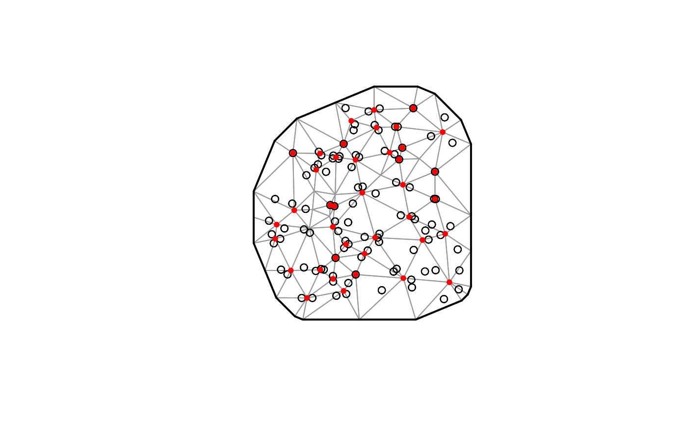

Simulate from a spatial Matern Random Field
sim( x = stats::runif(100, 0, 10), y = stats::runif(100, 0, 10), X = NULL, initial_betas = NULL, sigma_V = 0, time_steps = 1L, ar1_fields = FALSE, ar1_phi = 0.5, sigma_O = 0.01, sigma_E = 0.01, kappa = 0.01, phi = 0.01, seed = sample.int(1e+06, 1), list = FALSE )
| x | A vector of x coordinates. |
|---|---|
| y | A vector of y coordinates. |
| X | An optional covariate design matrix formatted as a list with each element of the list representing a slice in time. |
| initial_betas | Provide initial beta values, if model will include covariates. |
| sigma_V | Standard deviation of time-varying random walk on parameters. Set to 0 for parameters that should not vary through time. |
| time_steps | The number of time steps. |
| ar1_fields | Should random field draws be dependent on the previous year
( |
| ar1_phi | Correlation between years; should be between -1 and 1. |
| sigma_O | SD of spatial process (Omega). |
| sigma_E | SD of spatiotemporal process (Epsilon). |
| kappa | Parameter that controls the decay of spatial correlation. |
| phi | Observation error scale parameter. |
| seed | A random seed. |
| list | Logical for whether output is in list format: data in list element 1 and input values in element 2. |
A data frame where:
omega_s represents the simulated spatial random effects.
epsilon_st represents the simulated spatiotemporal random effects.
eta is the estimate based on fixed effects for each point in space and time.
real represents the simulated process without observation error.
observed represents the simulated process with random observation error.
b* contain the beta values for each covariate used to simulate each time slice.
cov* covariate residuals for each observation.
set.seed(2957278) dat <- sim(time_steps = 9) spde <- make_mesh(dat, c("x", "y"), n_knots = 40, type = "kmeans") plot(spde)m <- sdmTMB( data = dat, formula = observed ~ 1, time = "time", family = gaussian(link = "identity"), spde = spde )#> Warning: The model may not have converged: extreme or very small eigen values detected.r <- m$tmb_obj$report() r$sigma_O#> [1] 0.0001049265r$sigma_E#> [1] 0.0002147704#> Estimate Std. Error #> b_j -1.840600e-04 NaN #> ln_tau_O 2.182111e+00 NaN #> ln_tau_E 1.465802e+00 NaN #> ln_kappa 5.714627e+00 NaN #> ln_phi -4.545857e+00 NaN #> omega_s 2.619719e-10 NaNset.seed(1838) dat <- sim( time_steps = 9, ar1_fields = TRUE, ar1_phi = 0.5, sigma_O = 0.01, sigma_E = 0.3, phi = 0.01 ) spde <- make_mesh(dat, c("x", "y"), n_knots = 40, type = "kmeans") m <- sdmTMB( ar1_fields = TRUE, include_spatial = FALSE, data = dat, formula = observed ~ 1, time = "time", family = gaussian(link = "identity"), spde = spde ) r <- m$tmb_obj$report() r$sigma_E#> [1] 0.06548702#> [1] 0.4665123